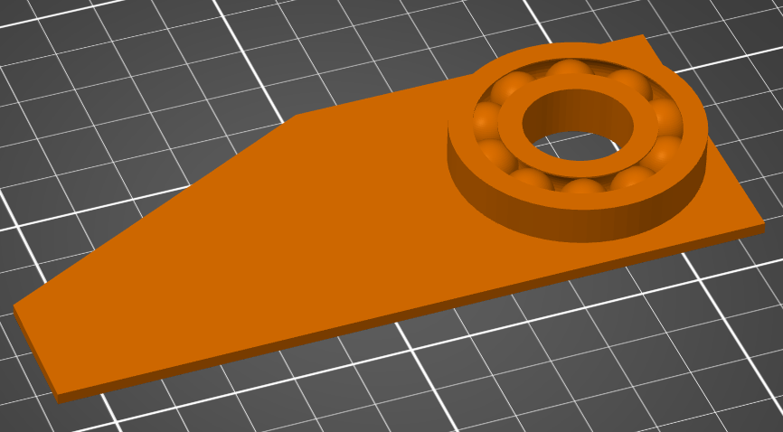
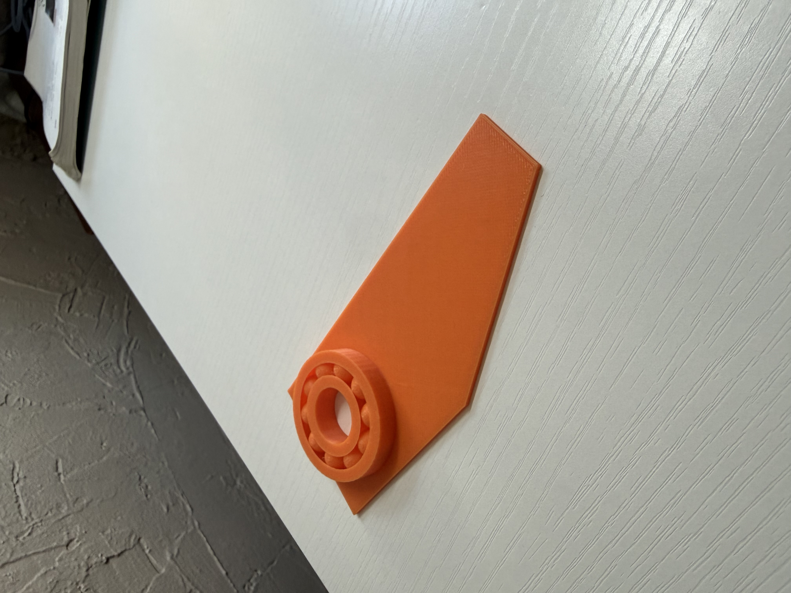
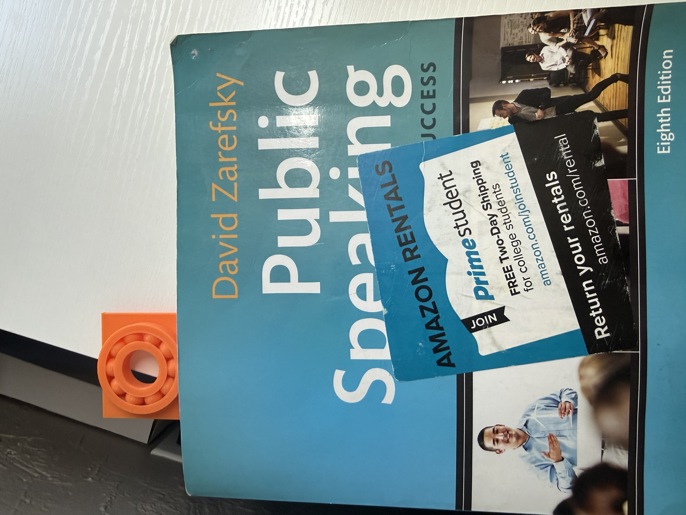

Week 5: 3D Printing
Design and print something that cannot be made easily through subtractive methods. Include a Fusion file (eg. .f3z), STL of your object, and sliced gcode in your documentation.
Fidget Bookmark

This week we were tasked with 3D designing and priting something that could not be made with other methods like laser cutting. I decided to make a fidget bookmark that you could use to not only keep track of your reading, but also to fidget with. The bookmark has a thin shaft which represents the bookmark aspect as you can wedge it in between your pages to keep track of your reading. However, what makes this bookmark unique is the bearing attatched to the bookmark converting it from a plain old bookmark to an exicting bookmark you can fidget with by placing your finger through the hole and spining the bookmark.
I modeled the bookmark body by myself, but I modeled the bearing using the youtube tutorial below.
Link to Youtube if Video doesn't load: https://youtu.be/u0sqHQAmSLc?si=WSTbMPhGoimHcFVy
Click Me! Link to Fidget Bookmark Fusion
Click Me! Link to Fidget Bookmark STL
Click Me! Link to Fidget Bookmark G-Code


Printed Fidget Bookmark
3D scan

My 3D scan did not go well at all, as I had to take over 250 photos and the result was very dissapointing. All my time and work resulted in only half of my mouse getting converted properly. I also had to wait for extended periods for the pictures to be converted and to finally export the file. This also drained a lot of my phones battery.
Final Project Update
I have decided to use my idea with the waterbottle that tracks how much water you drink as my final project
Timeline
My first two weeks will be to test each component of the project to see how they work, like how to measure the water inside the waterbottle
The week after that I will create my first prototype
The following weeks I will refine my prototype into something useable
Final Project Materials
My final project will not take a lot of materials as it only requires copper tape and a microcontroller to measure the water inside of a waterbottle.
Final Project Goals
My goal for the final project is to create a device that can track water using a device that will be placed outside of a waterbottle. If I am able to achive this relatively fast I will try and have the device connect to my phone so that it can send reminders to drink water or track my drinking in an app.